失踪

私と春花は2度目、五島は3度目のザッハだ。
相変わらず高校生が多い。
ひそひそ声が聞こえる。
相変わらず高校生が多い。
ひそひそ声が聞こえる。

「ねえねえ、今日死んだの、あの子のお父さんだって」
「マジで！？ 今日死んだのにザッハ来てるの？」
「しかも、あの3年が犯人で取り調べ受けたって」
高校生の情報は早い。
春花は周りの目を気にしているようだ。
「マジで！？ 今日死んだのにザッハ来てるの？」
「しかも、あの3年が犯人で取り調べ受けたって」
高校生の情報は早い。
春花は周りの目を気にしているようだ。
「春花、気にすることないよ？」
「うん……」
とはいえ、本当なら私もこうやってザッハに来ている場合でないのは確か。
春花の話が終わり次第、親戚や葬儀屋に連絡しないといけない。
「うん……」
とはいえ、本当なら私もこうやってザッハに来ている場合でないのは確か。
春花の話が終わり次第、親戚や葬儀屋に連絡しないといけない。

「新村せんぱーい！」
席に着くなり、五島が明るい声を張り上げた。
「ねえねえ、今回もおごりですか！？」
席に着くなり、五島が明るい声を張り上げた。
「ねえねえ、今回もおごりですか！？」

「バ……バカかよ！ もう今日の予算使い切ったよ！」
「えー先輩のけちー！」
「バカかよ！ このハイエナ！」
「だーれがハイエナですか！ この自他ともに認める天才美少女、五島絵梨奈に向かって！」
「何で美少女になってるんだよ！」
「えー先輩のけちー！」
「バカかよ！ このハイエナ！」
「だーれがハイエナですか！ この自他ともに認める天才美少女、五島絵梨奈に向かって！」
「何で美少女になってるんだよ！」
「まあまあ……」
そうそう、3人で集まると大体こんな感じになるのだ。
この空気がとても懐かしい。
そうそう、3人で集まると大体こんな感じになるのだ。
この空気がとても懐かしい。


「わっはははは！ 私は呪いをかけたんだー。だから犯人は私だー」
「お、おま……！ そんな際どい所をいじるかよ！」
「私は高3にもなって中二病なんだー」
「ぎー！ くそ……今となっては完全に黒歴史だ……」
「お、おま……！ そんな際どい所をいじるかよ！」
「私は高3にもなって中二病なんだー」
「ぎー！ くそ……今となっては完全に黒歴史だ……」

「…………？」
知らない人からショートメッセージが届いたようだ。
迷惑メッセージだろうか。
知らない人からショートメッセージが届いたようだ。
迷惑メッセージだろうか。
"元木警察署の伊勢です。今日はいろいろとお疲れ様。さっき話せなかったことがあるから、新村さんのいないところで、この電話番号にすぐ連絡してほしい。"
これは……どういうことだ……？
私はすぐに五島に視線を送った。
これは……どういうことだ……？
私はすぐに五島に視線を送った。

「ねえねえ新村先輩、そんなことよりですね――」
五島はすぐに気づいてくれたようで、春花への露骨ないじりをやめた。
五島はすぐに気づいてくれたようで、春花への露骨ないじりをやめた。

「うあああああ！！」
突然春花が立ち上がり、悲鳴を上げる。
「どうしたの春花！？」
「先輩！？」
私たちの間に再び緊迫した空気が戻った。
突然春花が立ち上がり、悲鳴を上げる。
「どうしたの春花！？」
「先輩！？」
私たちの間に再び緊迫した空気が戻った。

「あ……ああ……！」
春花の全身が震えている。
「やっぱりだ……！」
今度は春花のスマホが鳴ったようだ。
春花の全身が震えている。
「やっぱりだ……！」
今度は春花のスマホが鳴ったようだ。

「もしもし！？
はい……はい……
すぐ行きます！」
「お前ら悪い！ 話は後回しだ！」
「いったいどうしたって言うの！？」
「いったいどうしたって言うの！？」
「お前ら忘れたのかよ！
元木駅でピザの即日宅配頼んだだろ！
悪い！ すぐ戻るから！」
「…………」
「日本一のピザバカ女ですね……」
「春花の話が聞けないんじゃしょうがないし……私たちも出ようか……」
「先輩に戻るってメッセージ送っておきますね……」
「…………」
「日本一のピザバカ女ですね……」
「春花の話が聞けないんじゃしょうがないし……私たちも出ようか……」
「先輩に戻るってメッセージ送っておきますね……」


もうすっかり陽が落ちていた。
五島は自転車を警察に預けたままらしく、とりあえず一緒に来てもらうことにした。
「そう言えば私も、駅前に自転車置きっぱなしだったな……」
「おじさんに言えば大丈夫ですよ。 あと、これからいろいろと準備が大変でしょ？ 私も手伝いますね」
「うん……ありがとう、五島」
五島は自転車を警察に預けたままらしく、とりあえず一緒に来てもらうことにした。
「そう言えば私も、駅前に自転車置きっぱなしだったな……」
「おじさんに言えば大丈夫ですよ。 あと、これからいろいろと準備が大変でしょ？ 私も手伝いますね」
「うん……ありがとう、五島」
「いえいえ。先輩には返しきれないほどの恩がありますからね！」
「またそんな大げさな……」
「大げさなんかじゃありませんよ。今の私があるのは先輩のおかげですから……」
五島はことあるごとに、こんなことを言う。
「またそんな大げさな……」
「大げさなんかじゃありませんよ。今の私があるのは先輩のおかげですから……」
五島はことあるごとに、こんなことを言う。

「さて、私は何したらいいですかね？」
「じゃあ、親戚の連絡帳探してくれる？ 多分どこかの棚に入ってると思うの」
「わかりました！」
「じゃあ、親戚の連絡帳探してくれる？ 多分どこかの棚に入ってると思うの」
「わかりました！」
私は葬儀の仕方を調べてみようか。
うーん……でもこういう場合、宗派とか関係あるんだっけ？
うちって何か宗派とかあるのかな。
新村家は特別な宗派みたいだけど。
うーん……でもこういう場合、宗派とか関係あるんだっけ？
うちって何か宗派とかあるのかな。
新村家は特別な宗派みたいだけど。

あ、そう言えば――。
「先輩、さっき連絡来たんですよね？ 新村先輩に言えないような……」
「うん、私も今思い出した。伊勢さんがすぐに連絡をくれって」
「早くかけた方がいいですよ？」
「うん……。五島は連絡帳探しておいてちょうだい」
「じゃあ、スピーカーモードでお願いしますね」
「先輩、さっき連絡来たんですよね？ 新村先輩に言えないような……」
「うん、私も今思い出した。伊勢さんがすぐに連絡をくれって」
「早くかけた方がいいですよ？」
「うん……。五島は連絡帳探しておいてちょうだい」
「じゃあ、スピーカーモードでお願いしますね」
「もしもし、伊勢です！」
「伊勢さん、古郡です」
「よし、思ったより早くかけてくれた！ いいか、落ち着いてよく聞いてくれ！ 今回の事件についてだ！」
やはりただ事ではないようだ。
「伊勢さん、古郡です」
「よし、思ったより早くかけてくれた！ いいか、落ち着いてよく聞いてくれ！ 今回の事件についてだ！」
やはりただ事ではないようだ。
「古郡良治さんを殺害した犯人は……
新村美冬でほぼ間違いない……」
「やっぱり……そうなんですか……」
「さっきの『人目につく場所』で話した方がいいってことだが……。 古郡さんも新村さんも絶対に1人になるなよ！？ 犯人が狙っているかもしれない！」
「やっぱり……そうなんですか……」
「さっきの『人目につく場所』で話した方がいいってことだが……。 古郡さんも新村さんも絶対に1人になるなよ！？ 犯人が狙っているかもしれない！」
「そんな……！ 春花はもう家に帰っちゃったし、私と五島も家に……！」
「ザッハじゃないのか！？ 絶対にそこから動くな！ すぐにそっちに向かう！」
「ザッハじゃないのか！？ 絶対にそこから動くな！ すぐにそっちに向かう！」

「五島、どうしよう……！」
「先輩……こんなものがあったんですが……」
五島は1枚の紙を手渡してきた。
メモなんて読んでいる場合ではないのだが、五島は今すぐ読めと言っているのだ。
お父さんの字で書かれている。
「先輩……こんなものがあったんですが……」
五島は1枚の紙を手渡してきた。
メモなんて読んでいる場合ではないのだが、五島は今すぐ読めと言っているのだ。
お父さんの字で書かれている。

茜へ
今現在、祀耀800年四月六日 23時。
これをわざわざメールではなく紙に書き起こすのは、あらゆる証拠を漏らさないためだ。
祀耀800年四月七日の夜、 つまり明日、 美冬さんと会うことにした。 例の件を交渉する。
茜には悪いが、できるだけなつみの前では普段通りに振る舞うよう心掛けてほしい。
今現在、祀耀800年四月六日 23時。
これをわざわざメールではなく紙に書き起こすのは、あらゆる証拠を漏らさないためだ。
祀耀800年四月七日の夜、 つまり明日、 美冬さんと会うことにした。 例の件を交渉する。
茜には悪いが、できるだけなつみの前では普段通りに振る舞うよう心掛けてほしい。
言うまでもないが、ことが公になれば、なつみと春花ちゃんはもう社会で生きていけないだろう。
全ては2人のためだ。特になつみには一切知られてはいけない。
全ては2人のためだ。特になつみには一切知られてはいけない。
そして春花ちゃんには呪いを信じて生きてもらうしかない。
そうしなければ、春花ちゃんもまた、社会から抹殺されてしまうだろう。
お前にはもう言ってあるが、春花ちゃんの携帯電話には要注意だ。
この家にも何があるか分からない。
できるだけ、普段通りに生活してほしい。
そうしなければ、春花ちゃんもまた、社会から抹殺されてしまうだろう。
お前にはもう言ってあるが、春花ちゃんの携帯電話には要注意だ。
この家にも何があるか分からない。
できるだけ、普段通りに生活してほしい。
俺を信じて待っていてくれ。四月八日の朝には、全て終わるはずだ。
美冬さんもバカじゃない。俺たち家族に手を出すことはしないだろう。
代わりに美冬さんの正体も周知のことにはできないが。
美冬さんもバカじゃない。俺たち家族に手を出すことはしないだろう。
代わりに美冬さんの正体も周知のことにはできないが。
でも万一のことがあったら、四月八日は絶対になつみを1人にするな。
もしお前が身動きを取れない状態になったら、春花ちゃんと2人で過ごすようにさせてくれ。
意味なく警察署に居続けるようにしたら、警察に怪しまれるかもしれない。
なつみと春花ちゃんにばれないよう、慎重にやってくれ。
頼むぞ。
古郡良治
もしお前が身動きを取れない状態になったら、春花ちゃんと2人で過ごすようにさせてくれ。
意味なく警察署に居続けるようにしたら、警察に怪しまれるかもしれない。
なつみと春花ちゃんにばれないよう、慎重にやってくれ。
頼むぞ。
古郡良治
手の震えが止まらない。
震える手で紙を破いてしまいそうだ。
お父さんが何のことを言っているのかは分からない。
しかし、お父さんは全てを知っていた。お母さんも知っている……！
震える手で紙を破いてしまいそうだ。
お父さんが何のことを言っているのかは分からない。
しかし、お父さんは全てを知っていた。お母さんも知っている……！
「五島……どうしたらいいんだろう……」
「落ち着いてください！ おじさんを待ちましょう！」
「落ち着いてください！ おじさんを待ちましょう！」
隣のベランダのガラスが割れる音――。
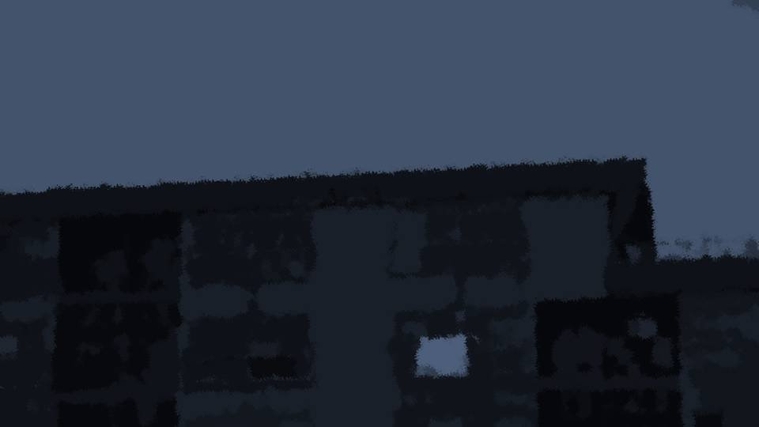
ベランダに出てみたが、周囲には何も見当たらない……。
しかし、新村家のベランダのガラスが割られたのは確かだ。
しかし、新村家のベランダのガラスが割られたのは確かだ。
 video: 桜.wmv
video: 桜.wmvと、桜まじりの強風が頬を撫でる。
video: 桜.wmv「なつみー！」
video: 桜.wmv風に当たった瞬間、遠くから春花の声。
そして直後、今日はやたら鈍かったあの直感が急激に脳裏を駆け巡った。
いる……！ 春花が危ない……！
そして直後、今日はやたら鈍かったあの直感が急激に脳裏を駆け巡った。
いる……！ 春花が危ない……！
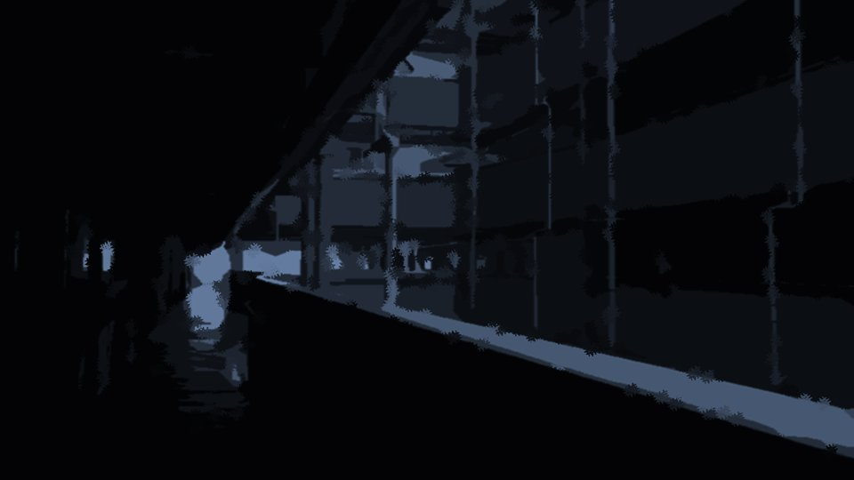
「先輩どこへ！？」
「春花ーーー！！」
「なつみ！ 逃げろーーー！！」
春花の声がかすかに聞こえた。ずっと上の方から……。
となると、屋上か……！？
「待ってて春花！ すぐ行くからー！」
「バカ！ 来るな！」
「春花ーーー！！」
「なつみ！ 逃げろーーー！！」
春花の声がかすかに聞こえた。ずっと上の方から……。
となると、屋上か……！？
「待ってて春花！ すぐ行くからー！」
「バカ！ 来るな！」
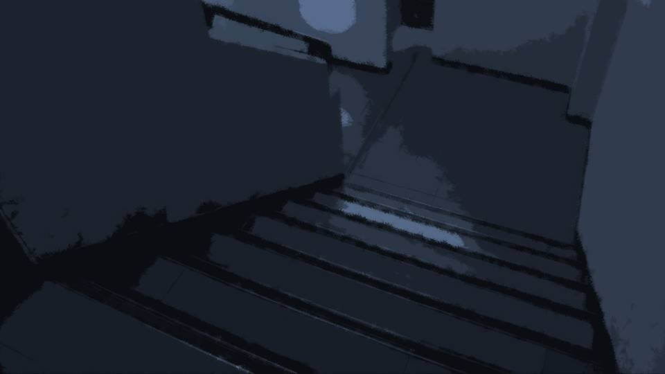
屋上へはエレベーターで行くことはできない。
階段を使っていくしかない。
5階の上が屋上だ。
どうして犯人……おばさんは春花を連れて屋上なんかに……？
階段を使っていくしかない。
5階の上が屋上だ。
どうして犯人……おばさんは春花を連れて屋上なんかに……？
いや……！ まだ犯人の顔を見るまで、おばさんが犯人だなんて信じたくない！
どうして実の娘に手を出す必要があるのだろうか。
おばさんはいつだって春花のことをかわいがっていた。
きっと……きっと何かの間違いだ！
どうして実の娘に手を出す必要があるのだろうか。
おばさんはいつだって春花のことをかわいがっていた。
きっと……きっと何かの間違いだ！
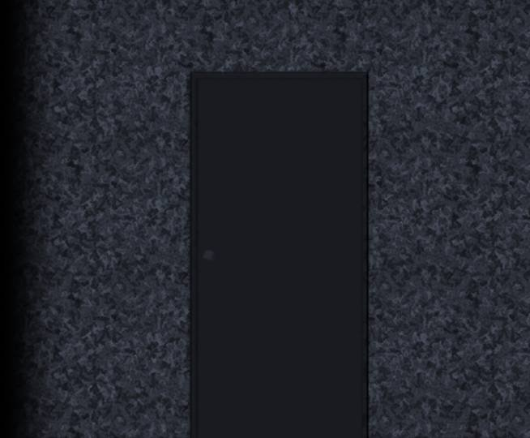
この先にお父さんを殺した犯人が……？
伊勢さんが来るのを待ちたいけど、今は1秒でも早く春花を助け出さなくてはならない。
迷っている暇なんてない……！
伊勢さんが来るのを待ちたいけど、今は1秒でも早く春花を助け出さなくてはならない。
迷っている暇なんてない……！
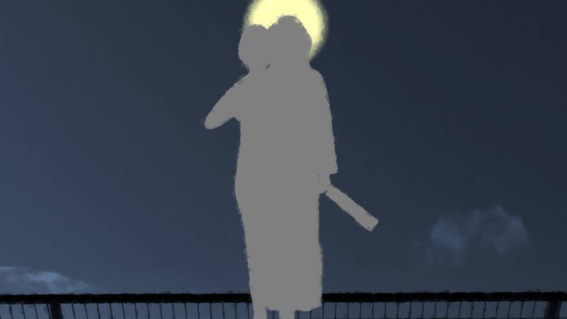
屋上は大きな月の光に照らされている。
そして屋上のフェンスの上に、1つの大きな人影。
よく見ると2つの人影が1つに固まっている。
1人は間違いなく春花だ。そしてもう1人は……。
そして屋上のフェンスの上に、1つの大きな人影。
よく見ると2つの人影が1つに固まっている。
1人は間違いなく春花だ。そしてもう1人は……。
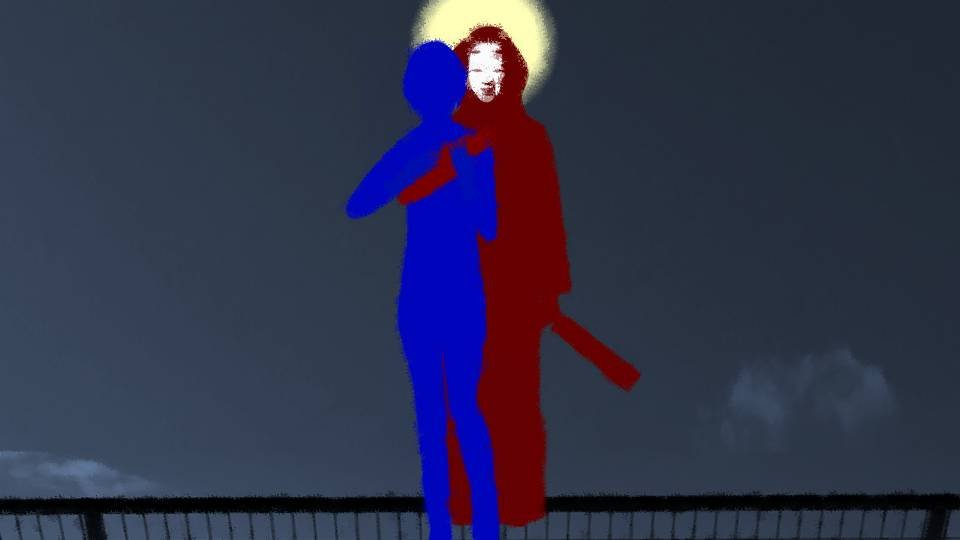
大きな赤装束と能面を着けた怪人が、春花の体に腕を回している。
「なつみなんで来たんだよ！ 離せ！ この野郎！」
春花はもがいたり足を蹴ったりしているが、怪人は微動だにしない。
こんな足場の悪いところで春花をどうする気なのか。
でももしこの怪人が本当におばさんなら、話が通じるかもしれない。
「なつみなんで来たんだよ！ 離せ！ この野郎！」
春花はもがいたり足を蹴ったりしているが、怪人は微動だにしない。
こんな足場の悪いところで春花をどうする気なのか。
でももしこの怪人が本当におばさんなら、話が通じるかもしれない。
「バ、バカ！ なんでこっち来るんだよ！ 逃げろって言ってんだろうが！」
私は春花の警告を無視してゆっくりと歩み寄る。
私は春花の警告を無視してゆっくりと歩み寄る。
「あなた……
本当におばさんなの……？ 春花のお母さんなの……？」
「な……なつみ……何言ってんだよ……。お母さんがそんなことするわけ……」
「おばさん……」
私は地面に膝をついた。
そして私の両手も地面につけ――。
「な……なつみ……何言ってんだよ……。お母さんがそんなことするわけ……」
「おばさん……」
私は地面に膝をついた。
そして私の両手も地面につけ――。
「おばさん……春花のお父さんのこと……
さっき聞きました。本当に……すみませんでした」
その時、屋上に強い風が吹いた。
その時、屋上に強い風が吹いた。
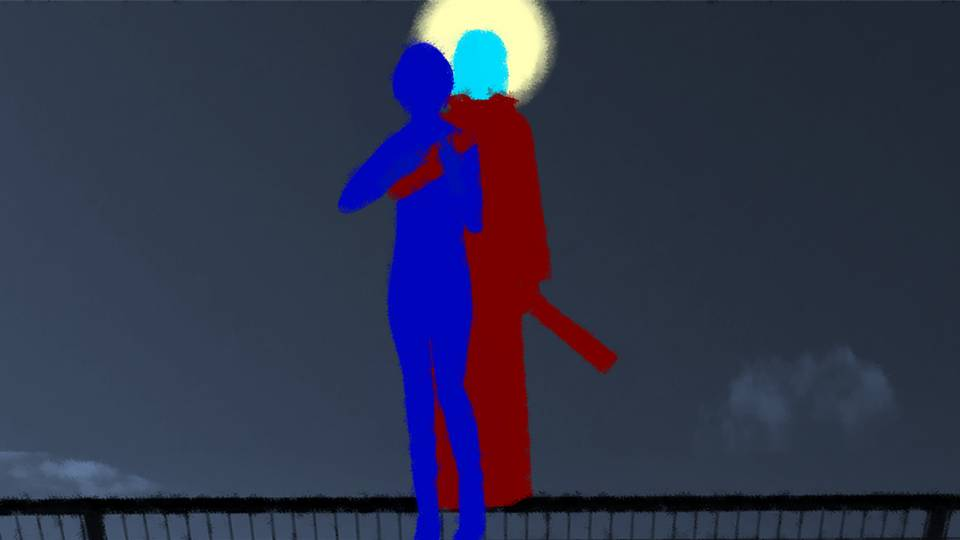
風は怪人のフードと能面を吹き飛ばし、その素顔が露わになった。
「お母さん……何してんだよ……。 お母さんが……死神だなんて……。嘘だろ……？」
その素顔は紛れもなく春花のお母さんだった。
しかしいつも見せる陽気な表情ではなく、能面以上に無表情だった。
「お母さん……何してんだよ……。 お母さんが……死神だなんて……。嘘だろ……？」
その素顔は紛れもなく春花のお母さんだった。
しかしいつも見せる陽気な表情ではなく、能面以上に無表情だった。
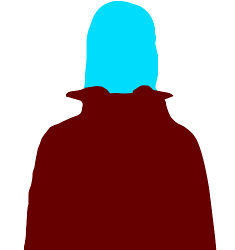
「なつみちゃん……。
もう……そういう問題じゃないのよ……」
その時、屋上のドアが開き、伊勢さんが他の警察官と共に飛び込んできた。
「新村美冬！ 殺人および死体遺棄の容疑で緊急逮捕する！ 新村春花さんを解放しろ！」
伊勢さんは銃口をおばさんに向けた。
その時、屋上のドアが開き、伊勢さんが他の警察官と共に飛び込んできた。
「新村美冬！ 殺人および死体遺棄の容疑で緊急逮捕する！ 新村春花さんを解放しろ！」
伊勢さんは銃口をおばさんに向けた。

「古郡先輩！ 新村先輩！」
「五島ちゃん！ 来るなと言っただろ！」
「先輩たちをどうする気ですか！？」
「五島ちゃん！ 来るなと言っただろ！」
「先輩たちをどうする気ですか！？」
「はあ……仕方ないわね……これだけの衆人環視じゃ……。
いつの間にか私のこともばれちゃったし……。
私、騙されてたのね……」
騙されていた……？ 何を言っているのだろうか……。
騙されていた……？ 何を言っているのだろうか……。
「行くわよ、春花……」
おばさんは春花の身体をがっちりと抱え込むと、春花たちの身体が、ゆらりと動いた。
おばさんは春花の身体をがっちりと抱え込むと、春花たちの身体が、ゆらりと動いた。
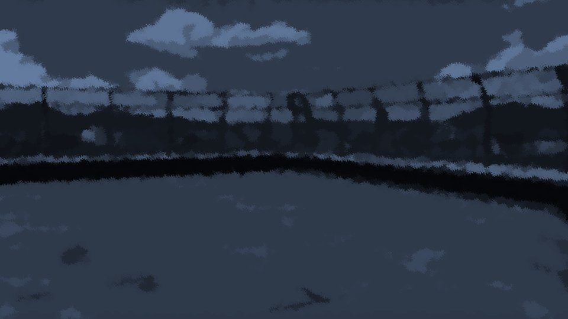
「春花ーーー！！！」
「先輩危ない！」
無我夢中でフェンスをよじ登った。
春花がおばさんと一緒に駐車場の方へ落ちていった。
嘘でしょ……！ 春花……！
「先輩危ない！」
無我夢中でフェンスをよじ登った。
春花がおばさんと一緒に駐車場の方へ落ちていった。
嘘でしょ……！ 春花……！
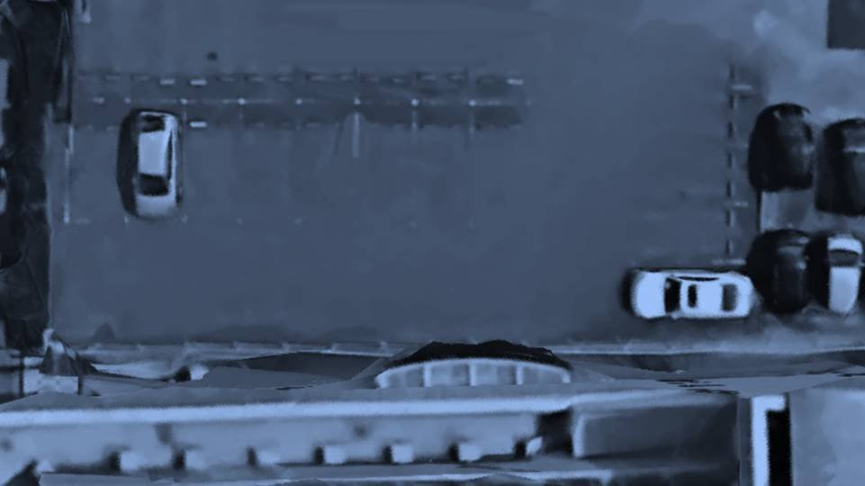
え……？
フェンスを乗り越え屋上から下を見下ろしたが、誰もいない。
いくら目を凝らしても、人影が全く見当たらない。
フェンスを乗り越え屋上から下を見下ろしたが、誰もいない。
いくら目を凝らしても、人影が全く見当たらない。
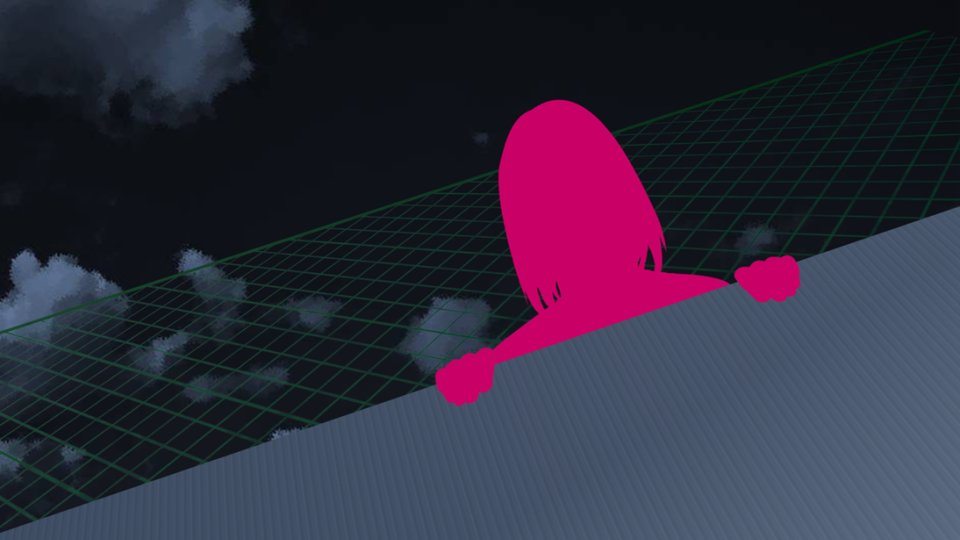
そんなばかな……！ いくら夜でも、こんなに明るい月があるのだから見えないはずがない……！
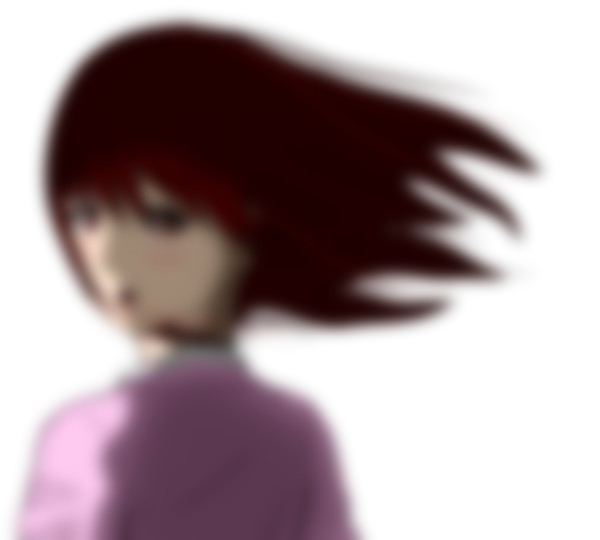
video: 桜.wmv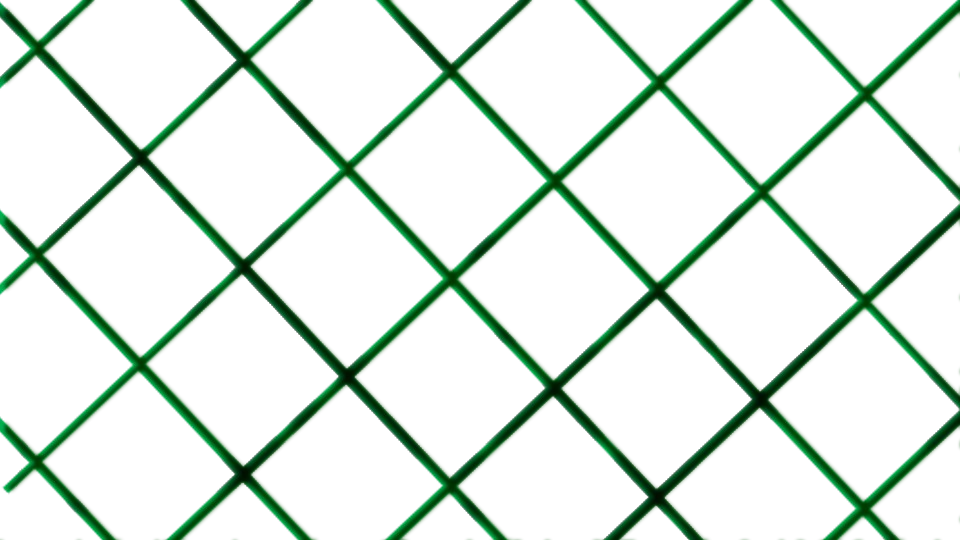
「古郡先輩！ 新村先輩は……！」
「五島……春花が……」
「五島……春花が……」
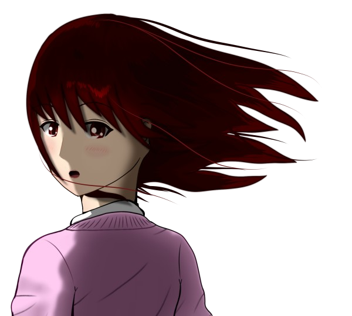
video: 桜.wmv「春花が、消えちゃった……」
Read ✓ Next in this arc →